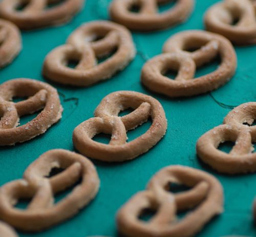

Walk into any store and you'll be presented with pretzels in every flavor shape and size, but what makes
this treat stand out from the rest? Besides the obvious pretzel shape, there is at least one major difference
this staple snack has over the rest, its range andflexibility. Pretzels can be so many things, including:
The biggest difference in pretzel philosophy, is between the soft and hard pretzel variants. This texture shift
makes an even larger change on a consumer's diet. According to an article featured on healthline.com, hard
pretzels outmatch soft pretzels in nearly every nutritional matchup. Below is a graph which presents the basic
nutional differences between soft and hard pretzels:
| 1 soft pretzel with salt(120 grams) | 1.5 ounces of hard pretzels (42.5 grams) | |
|---|---|---|
| Calories | 408 | 163 |
| Fat (grams) | 4 | 1 |
| Sodium (percentage) | 41% daily value | 23% daily value |
The graph presents some disturbing truths about our soft friends. They contain more calories, fat, and close to
half of the recommended daily sodium intake. They seem like a worse choice on every level except for texture.
EatingWell.com would argue against that conclusion, as they make a compelling argument for the pretzels'
softer younger brother. They say that pretzels can be used to dip into protein rich or fat rich substances to make
up for the added calories. This valid argument turns the battle into more of a stalemate, as the choice becomes
less about pure calories, and more about how they are being treated. In conclusion, pretzels are a special snack
to be savored, but also a treat to be monitered.
